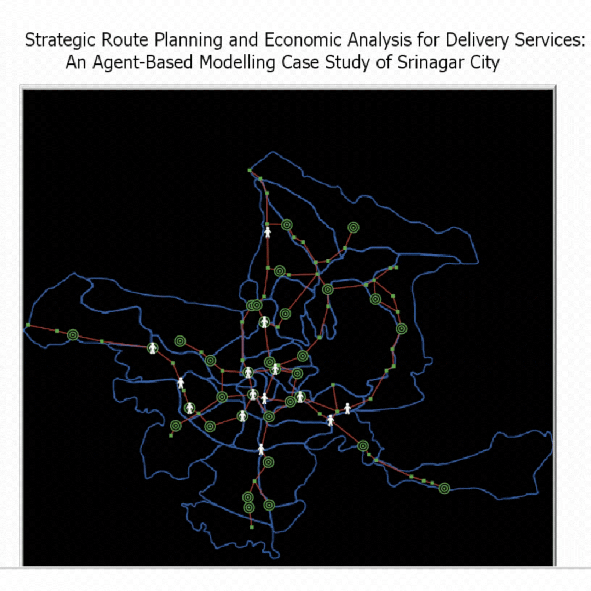
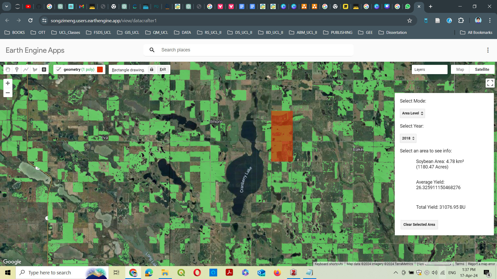
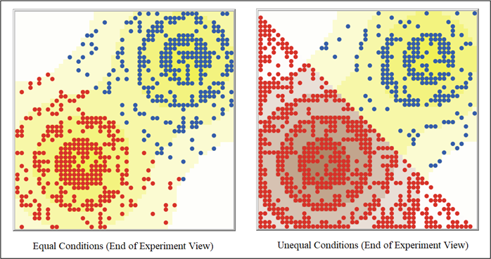
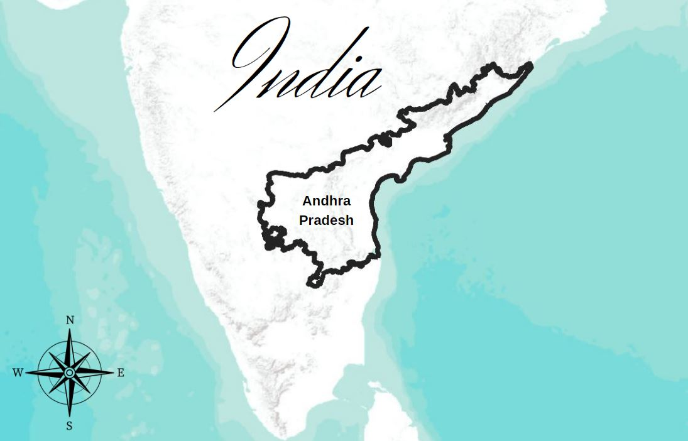
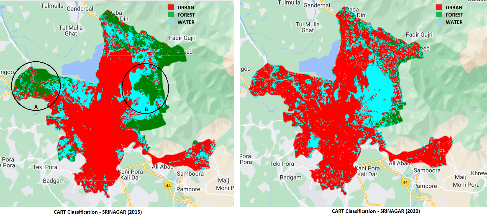
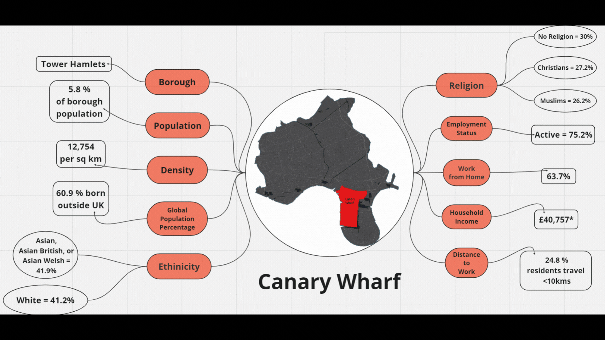

Strategic Route Planning and Economic Analysis for Delivery Services of a City"
The primary goal of this NetLogo model is to evaluate financial performance of a delivery company operating within a city using real-world geographic-data to optimize operational strategies. The simulation not only provides insights into no. of deliveries, profit or loss margins but also enables adjustments to overhead expenses to refine financial performance.

CROPINVEST - Crop Yield Estimator
Group Project: Me and my other group memebrs creates CROPINVEST, a GEE application that monitors the environment to predict crop yields, and based on these yields, we obtain the market value of the crop, which in turn can help end users (banks, crop insurance companies ,etc) to accurately and scientifically capture the farms potential to pay the crop loan amount or the risk associated with the insured crops and enable stakeholders to make informed decisions that optimize agricultural productivity, market strategies, and economic outcomes.

Investigating Survival Disparity : Comparative Analysis of Cities with Unequal Resources.
This study aimed to examine the influence of unequal resource distribution, represented by sugar patches, on the final surviving population in the two neighboring cities with similar demographics (similar population, vision & metabolism). This analysis is conducted by analyzing data generated from Behavior Space and subsequently exploring the consequences of various equality scenarios on the behavior of the "Sugarscape 1 - Immediate Growback Model" and "Sugarscape 2 - Constant Growback Model".

Spatial Clustering of Public Service Facilities in Andhra Pradesh, India
This study explores the spatial clustering of the different public service facilities (Health, Transport, Education & Agricultural) for one of the newest split states of India viz. Andhra Pradesh. The erstwhile Andhra Pradesh was split into two states - Telangana & Andhra Pradesh (‘Andhra Pradesh Reorganisation Act, 2014’, 2024). The reorganization led to a redistribution of resources and creation of new administrative blocks. So, our study will look at the distribution & the spatial clustering of facilities thus exploring the regional disparities between blocks effectively.

Implementation of Machine Learning Techniques for detecting temporal change in LULC in a city
I explored the used of Classification and Regression Trees (CART) and Random forests (RF) using Google Earth Engine for Srinagar City. For, this exercise I identified three types of landcovers - water, urban and forest.

Comparing Socio-spatial Traits in Two London Neighbourhoods using Soja’s Socio-spatial Dialectic
In this study, I compared and described the sociospatial characteristics of two neighbourhoods in the London borough of Tower Hamlets: Whitechapel and Canary Wharf and further explore role of socio-spatial dialectic in understanding their very different outcomes.